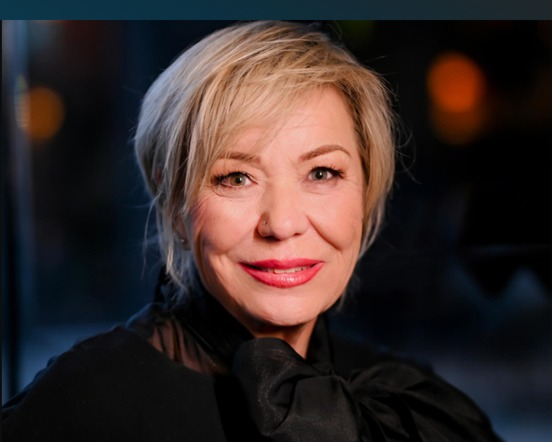
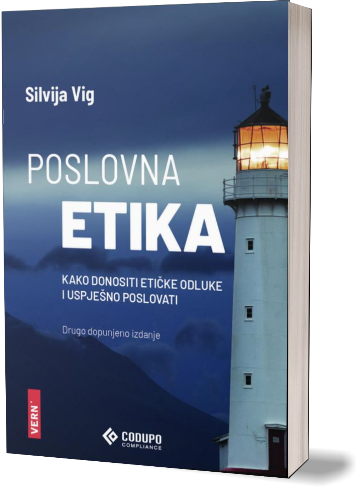

Bavimo se samo usklađenošću i integritetom
CODUPO, COmplianceom DO Uspješnog POslovanja, osnažuje organizacije kroz edukaciju i stručno savjetovanje u području usklađenosti, integriteta i etike.
Jedno mjesto za sva pitanja usklađenosti i etike
Ime CODUPO dolazi od „COmplianceom DO Uspješnog POslovanja”. Savjetujemo i educiramo organizacije u području usklađenosti, etike, integriteta i antikorupcije, uz pristup koji osnivačica opisuje kao „a one stop shop for compliance & ethics”, jedno mjesto za sva pitanja usklađenosti i etike.
Četiri koraka, jasni rokovi
Razgovor i analiza
Upoznamo organizaciju, propise koji se na vas odnose i postojeće procese. Rezultat je GAP analiza s prioritetima.
Plan i dizajn
Predlažemo strukturu programa, odgovornosti i rokove. Plan usuglašavamo s Upravom prije nego krenemo.
Uvođenje i edukacija
Pišemo dokumente, postavljamo kanale za prijave i educiramo zaposlenike, menadžment i nadzorna tijela.
Praćenje i poboljšanje
Pratimo pokazatelje, provodimo interne revizije i pripremamo vas za certifikaciju prema ISO normama.
Zašto radimo ono što radimo
Osnažiti organizacije kroz edukaciju i stručno savjetovanje u području usklađenosti, integriteta i etike.
Biti vodeći partner u izgradnji kulture usklađenosti i integriteta, s inovativnim pristupima za sigurnije i održivo poslovanje.
Tim koji stoji iza savjeta

Dr. sc. Silvija Vig
Konzultantica, trenerica i autorica s više od 25 godina iskustva na menadžerskim pozicijama. Doktorirala je na Ekonomskom fakultetu u Zagrebu s temom utjecaja poslovne etike na uspješnost poduzeća.
Nositeljica je certifikata CCEP-I i LPEC te certificirana trenerica za ISO 37301, ISO 37001, ISO 31000 i DPO. Executive je Coach, NLP Master Practitioner, savjetnica za kulturnu transformaciju (CTT) i certificirana medijatorica. Predaje kolegij Business Ethics and CSR na R.I.T. Croatia.
Članica je Komisije za poslovni integritet pri ICC Hrvatska od 2018. i predsjednica Etičkog povjerenstva INA Grupe od 2025. Sudjelovala je u antikorupcijskim projektima s UN-om, OECD-om, USAID-om, CIPE-om i DPI-jem.
Mag. iur. Ljiljana Hrastinski Jurčec
Sutkinja Vrhovnog suda Republike Hrvatske u mirovini. U pravosuđu je provela više od 40 godina, prije svega u trgovačkom, ovršnom i stečajnom pravu. Bila je sutkinja Visokog trgovačkog suda RH i predsjednica nekoliko odjela.
Diplomirala je na Pravnom fakultetu u Osijeku i pohađala poslijediplomski studij Poslovno pravo i transakcije. Na listi je arbitara Hrvatske gospodarske komore i certificirana medijatorica, a autorica je publikacija o ovršnom i stečajnom pravu.
U CODUPO-u daje mišljenja i pravnu podršku u složenim pitanjima usklađenosti.

 PECB Authorized Silver Partner, četvrtu godinu zaredom
PECB Authorized Silver Partner, četvrtu godinu zaredom
Predavanja, nastupi i objave
Izbor izlaganja i panel rasprava od 2018. do 2024. na regionalnim i međunarodnim compliance i antikorupcijskim skupovima.

Upoznajmo se
Recite nam gdje ste danas u pitanjima usklađenosti, a mi predlažemo sljedeći korak.